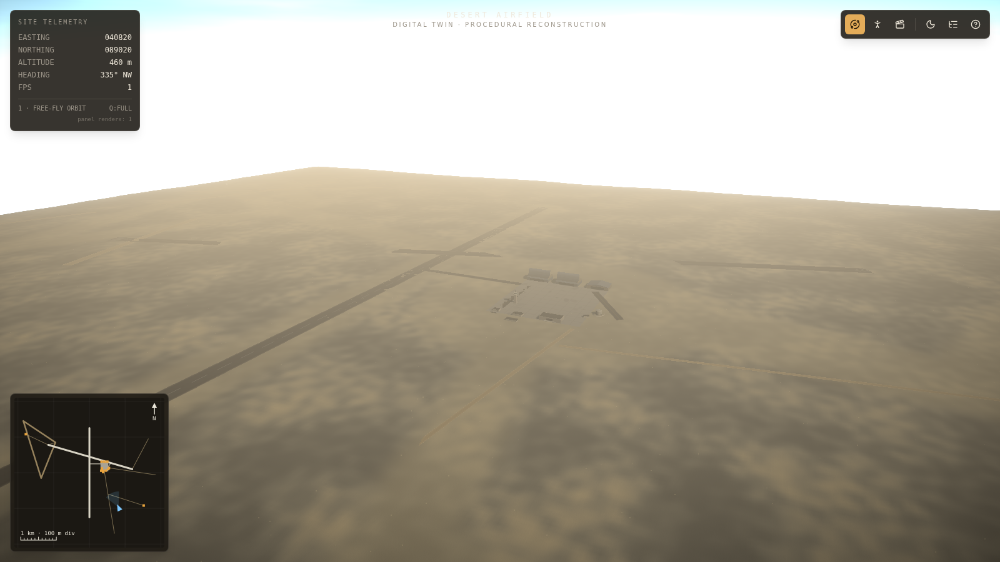
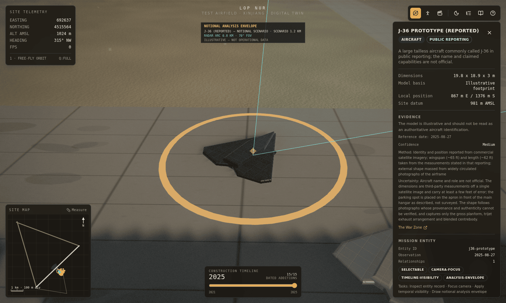

Lop Nur Twin Base
A 1:1 horizontal-scale, explorable reconstruction of a remote desert airfield near Lop Nur — built from public Earth-observation data, cited open reporting, and clearly labelled interpretation.

A map, not an answer
The airfield near Lop Nur sits alone in the Xinjiang Gobi. Open reporting has associated it with likely reusable-spacecraft landings and 2025 sightings of aircraft commonly called the J-36 and J-XDS. Those are reported associations, not conclusions produced by this twin.
This reconstruction does not claim to reveal what happens there. Its value is different, and in some ways more useful: it turns scattered pixels into a space you can move through. Walk the flight line, stand under the assembly hangar door, follow the spur taxiway to the apron — and the questions you didn't know to ask begin to surface on their own.
The twin is best understood as a structured instrument for discovery. Every building, road and runway leg is a projection of one source-of-truth layout, so the model is falsifiable: measure it, disagree with it, correct it. That is the point. It is a foundation others are meant to build upon — not a verdict, but a shared frame of reference for a place that has never had one.
Inside the wire — the site anatomy
The 6.8 × 6.8 km airfield frame is driven by a single layout file. Add a structure there and it appears in the world, the minimap, and the site index at once. What follows is the current census of what has been represented.
| Zone | What's there |
|---|---|
| The airfield | A single ~5 km pale-concrete runway (05/23, modeled grid bearing ~046°) with two ~5.5 km graded-earth strips completing the triangle out to a north-west apex. |
| The compound | Reached by a spur taxiway from mid-runway: three concrete aprons, paved internal streets, and dirt access tracks along the perimeter. |
| Structures (23) | Public imagery informs footprints and roof forms for service and storage halls, a large assembly-hall interpretation, an arched shed, a tower, an operations block, and walled service courts. These labels are model hypotheses, not verified functions. |
| The flight line | Two parked models represent the J-36 and J-XDS aircraft reported in August and September 2025 imagery. Both are clickable and evidence-labelled; the separate animated flying-wing demonstrator is illustrative and not part of the structure catalog. |
| Terrain | 6.8 × 6.8 km of seeded, procedural dried-lakebed terrain. A nearby Copernicus GLO-30 sample supplies an approximate ~981 m EGM2008 elevation datum; the rendered relief is a proxy, not a DEM-derived surface. |
| A living base | The flight circuit, radar-like prop, service vehicle, windsock, beacons and day/night cycle are illustrative systems that make scale and environmental conditions legible; they do not claim observed operations. |

Methodology — from public evidence to 3D world
The pipeline is deliberately reproducible. Nothing here depends on classified data, leaked plans, or private access. Public Earth-observation products, published analysis and open reporting are cited according to the role each one plays; interpretation and simulation are kept separate from source observations.
Register public references
Use Sentinel-2 as repeatable optical context, Copernicus GLO-30 as a coarse elevation reference, and cited reporting as event context. The approximate coordinates, ~5 km 05/23 runway and modeled ~046° grid bearing anchor the 6.8 km local frame.
Trace & classify
Encode visible runway, road and structure footprints once, in metric units, then label each claim as observed, reported, interpreted or illustrative. A visible footprint does not establish a building's use.
Generate scenarios
A seeded heightfield builds the plain; procedural geometry raises structures; embedded NASA POWER monthly climatology supplies broad regional weather scenarios. Neither input is presented as surveyed terrain or live site weather.
Ship an offline snapshot
The browser makes no runtime imagery, DEM, reporting or climate requests. Source values and citations are reviewed ahead of release, then the scene and minimap render from the same deterministic layout.
Determinism is the guarantee. Noise is seeded, textures are generated locally, and structures are placed from one metric layout, so the same inputs produce the same world. Determinism makes the model auditable; it does not turn an interpretation into an observation.
Geographic boundary. The Northern Tunnel Test Area is not part of this airfield frame. Published coordinates place it about 127 km away; it is retained only as offsite context and no tunnel portals or support facilities are rendered.
Terrain and climate boundary. A nearby Copernicus GLO-30 sample is about 981 m above the EGM2008 geoid. It is a reference datum only: the heightfield is a procedural proxy, not a redistributed GLO-30 tile. NASA POWER 2001–2020 monthly means are coarse regional scenario inputs, not a local station, forecast or event-time weather.
Who it's for
A measurable, walkable frame of reference. Compare the twin against fresh imagery, test spatial hypotheses about sightlines and dimensions, and cite a shared model instead of describing pixels in prose.
A production-grade, real-world level: procedural terrain and structures, adaptive quality that sheds effects under load, and a clean layout-driven data model to fork, restyle, or drop straight into a scene.
An immersive place to be. First-person walk, free-fly orbit, and a cinematic flythrough turn a remote coordinate into somewhere you can stand — the sense of scale that no flat map delivers.
How to explore
| Key | Action |
|---|---|
1 / 2 / 3 | Free-fly orbit · first-person walk (WASD, Shift sprints) · cinematic flythrough |
N | Toggle day / night |
I / H | Site index (grouped outliner) · help overlay |
Click | Open a structure's dossier and fly to it · click the minimap to jump the orbit camera |
On phones and tablets, orbit responds to one-finger drag, pinch-zoom and two-finger pan; first-person mode shows on-screen thumb-stick and look controls.
Ethics & sourcing
Public, attributable inputs. The reconstruction uses openly accessible Earth-observation products, public analysis and cited reporting. It uses no classified material, leaked plans or private access. Sentinel-2 is one input, not a sole or structure-resolving source.
Evidence status, clearly labelled. Observed means visible in cited public imagery; reported means stated by a cited publisher; interpreted means the model assigns a dimension, identity or function; illustrative means procedural scenery, vehicles, aircraft detail, animation or atmosphere.
Separate sites stay separate. The Northern Tunnel Test Area is roughly 127 km from the airfield and is not rendered. CSIS found no significant visible change between its March 26 and June 25, 2020 comparison images and described the evidence as inconclusive; this project makes no tunnel-activity or facility-function claim.
Offline by design. The deployed simulator does not fetch imagery, DEM, climate or reporting data at runtime. Updating a source is an explicit, reviewable data change rather than a hidden live dependency.
A model, not a target. This is a scaled analytical reconstruction for research, education and creative work. It is not operational intelligence and confers no capability that public imagery does not already provide.
Correctable by design. Because every element is a projection of one documented layout, errors are visible and fixable in the open. Disagreement is a feature: the honest response to a wrong wall is a pull request, not a footnote.
Public-data ledger
| Source | Role in the twin | Important limit |
|---|---|---|
| Sentinel-2 L2A scene T45TXF, 2025-09-28 | The pinned public scene used to measure the runway and interpret the current footprint layout. | The 10 m imagery supports site-scale measurement, not detailed function claims; modeled endpoints retain ~40 m uncertainty. |
| ESA Sentinel-2 handbook | Repeatable optical context and registration conventions. | Native bands are 10, 20 or 60 m; Sentinel-2 alone cannot verify detailed building functions. |
| Copernicus DEM GLO-30 | An approximate sample near the public runway center (~981 m, EGM2008; sampled 2026-07-19) anchors local altitude. | The collection link is not a pinned tile. The rendered relief is procedural and no DEM tile is redistributed. |
| NASA POWER climatology · point query | Monthly 2001–2020 temperature, humidity, precipitation, solar and wind means shape regional scenarios. | Modelled grid climatology, not local observation, forecast or event-time weather. |
| The War Zone, 2025 | Reporting for J-36 and J-XDS sightings and runway-length context. | A secondary report; aircraft labels and dimensions remain attributed reporting. |
| Secure World Foundation, 2026 | Context for likely reusable experimental spacecraft landings. | “Likely” is retained; the simulator does not independently verify a landing. |
| CSIS PONI, 2026 · published coordinates | Offsite context and the ~127 km separation from the airfield. | The tunnel area is not rendered; CSIS's 2020 comparison was inconclusive and found no significant visible change. |
Copernicus DEM attribution: © DLR e.V. 2010–2014 and © Airbus Defence and Space GmbH 2014–2018, provided under COPERNICUS by the European Union and ESA. Climate data attribution: NASA Langley Research Center POWER Project.
A foundation to build on
The reconstruction is open source and designed to be extended. The single-source layout means the world, the minimap and the site index stay in sync automatically — so contribution is low-friction by construction.
Refine the layout
Correct a footprint, add a newly-visible structure, or re-measure a strip against fresh imagery — one file, and it propagates everywhere.
Fork for your medium
Restyle it as a game level, export it for a VR headset, or substitute reviewed public datasets while keeping runtime self-contained and non-operational.
Extend the dossiers
Attach sourced annotations, measurements and citations to each structure so the twin doubles as a shared evidence base.
Reproduce the method
Apply the same imagery-to-world pipeline to another site. The value compounds the moment a second reconstruction exists.
The most valuable map is the one other people keep redrawing.
Created by Christopher Woodyard / Vers3Dynamics. Built from public data and cited open reporting, with procedural interpretation clearly separated from source observations.
Special thanks to Kimi K3 Max.